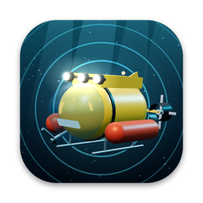
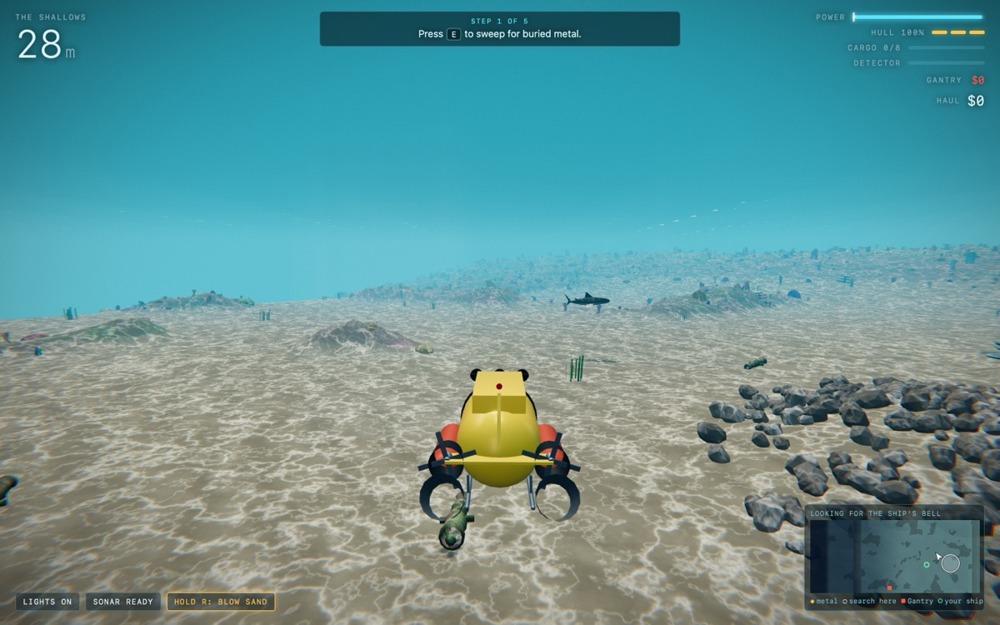
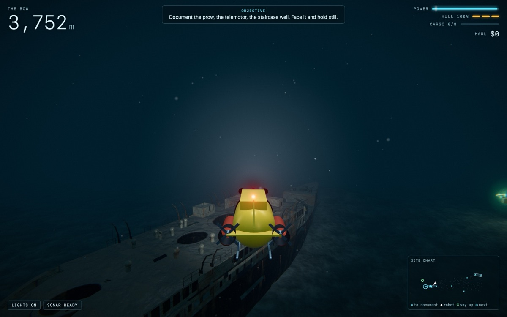
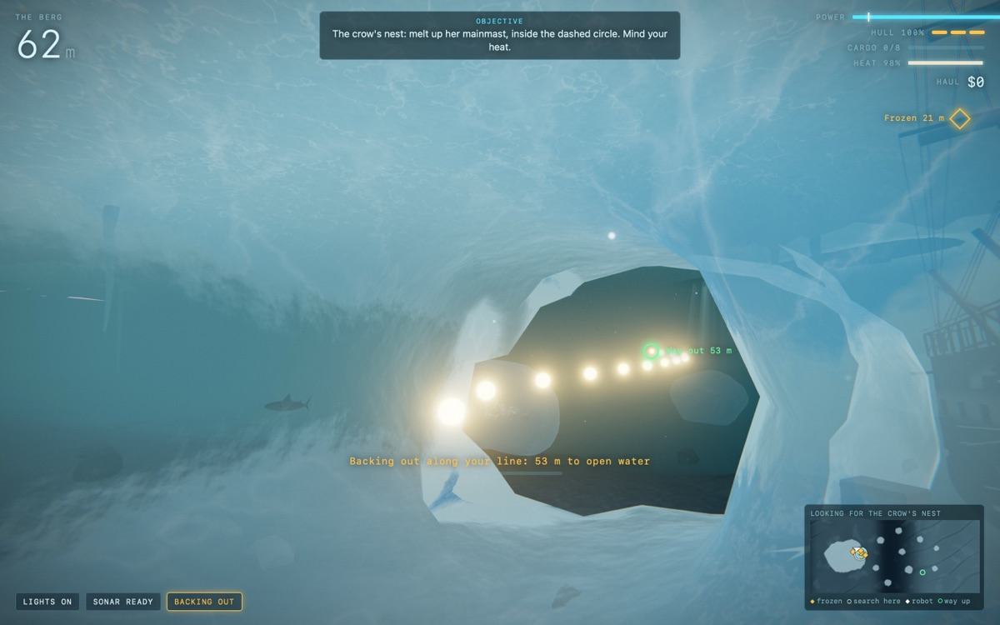
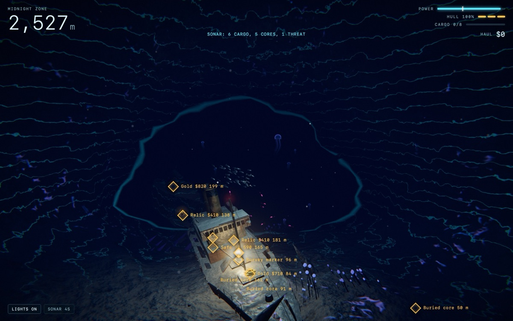

Deep Signal
Something on the sea floor has been calling every forty seconds for eleven years. Fly a submersible down to four very different wrecks, bring up what you can, and find out what it wants.
Download on theMac App Store


